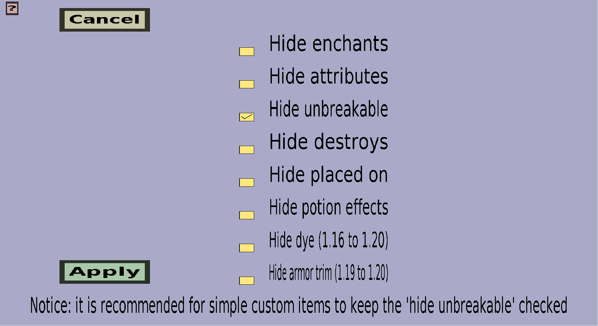

The item flags selection menu can be used to decide which item flags will and won't be given to the custom item in-game. It should look like this:
On the left are the 'Cancel' and 'Apply' button.
In the middle, there is a checkbox for every item flag I'm aware off. The name of the item flag to which each checkbox corresponds is written on the right of the checkbox. Checking a checkbox will cause the custom item to have the corresponding item flag in-game. Unchecking a checkbox will cause the custom item to not have the corresponding item flag in-game.
I think the names of the item flags explain themselves well enough, but there is 1 item flag that is a bit more... interesting. The 'Hide unbreakable' item flag will hide the purple 'Unbreakable' that would otherwise be in the lore of unbreakable tools. Technically, all custom items are unbreakable tools! You don't need to know the hows and why's of the unbreakable tool thing, but you should just keep the 'Hide unbreakable' item flag checked to prevent that purple 'Unbreakable' from showing up in the lore. The only exception to this is when you are creating a custom tool that is desired to be unbreakable, in which case showing that purple 'Unbreakable' in the lore would be desired.